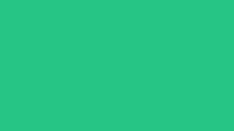
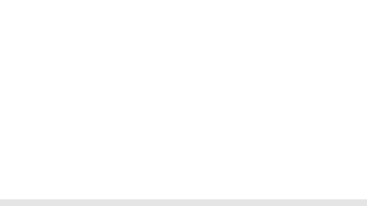

Colors - Online gebruik
Net als bij ons logo en de typografie is kleur een belangrijk onderdeel van het Recupel verhaal. Onze hoofdkleuren, groen, blauw, wit en zwart geven de uitstraling die wij verdienen en versterken onze positie in het landschap. Deze kleuren geven onze organisatie in al zijn faceten een hedendaagse twist.
Recupel Blue
| CMYK | 85 62 0 0 |
| RGB | 0 98 255 |
| HEX | #0062FF |
| PMS | PANTONE 2172 C |

Eco Green
| CMYK | 69 0 62 0 |
| RGB | 38 196 133 |
| HEX | #26C485 |
| PMS | PANTONE 7479 U |
Black
| CMYK | 76 66 61 82 |
| RGB | 27 27 27 |
| HEX | #1B1B1B |
| PMS | PANTONE 419 C |

White
| CMYK | 0 0 0 0 |
| RGB | 255 255 255 |
| HEX | #000000 |
CMYK
CMYK staat voor cyaan, magenta, yellow (geel) en key (zwart). Met deze vier kleuren kun je bijna elke mogelijke kleur maken. CMYK-kleuren gebruik je voor full color drukwerk (bijvoorbeeld als je foto’s gebruikt op flyers of in folders).
CMYK staat voor cyaan, magenta, yellow (geel) en key (zwart). Met deze vier kleuren kun je bijna elke mogelijke kleur maken. CMYK-kleuren gebruik je voor full color drukwerk (bijvoorbeeld als je foto’s gebruikt op flyers of in folders).
PMS
Doordat je met CMYK kleuren niet alle kleuren kan verkrijgen, wordt in huisstijl drukwerk vaak een steunkleur gebruikt. PMS (Pantone Matching System) is hiervoor het meest gebruikte systeem en is wereldwijd hetzelfde kleur.
Doordat je met CMYK kleuren niet alle kleuren kan verkrijgen, wordt in huisstijl drukwerk vaak een steunkleur gebruikt. PMS (Pantone Matching System) is hiervoor het meest gebruikte systeem en is wereldwijd hetzelfde kleur.
RGB
Bij het RGB-kleursysteem bekomt men door een combinatie van de drie primaire kleuren (Rood, Groen, Blauw) de gewenste kleur. RGB wordt gebruikt voor de meeste digitale toepassingen (office, beeldschermen).
Bij het RGB-kleursysteem bekomt men door een combinatie van de drie primaire kleuren (Rood, Groen, Blauw) de gewenste kleur. RGB wordt gebruikt voor de meeste digitale toepassingen (office, beeldschermen).
HEX
Portable Document Format (PDF) is een bestandsformaat dat wordt gebruikt voor het op een betrouwbare manier presenteren en uitwisselen van documenten, onafhankelijk van software, hardware of besturingssysteem.
Portable Document Format (PDF) is een bestandsformaat dat wordt gebruikt voor het op een betrouwbare manier presenteren en uitwisselen van documenten, onafhankelijk van software, hardware of besturingssysteem.